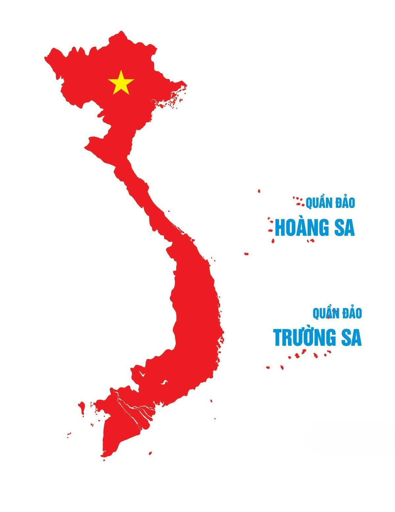

Đúng phạm vi
Tóm tắt có nguồn
Vì: câu hỏi rộng dễ gãy và người học phải tự mở lại slide kiểm tra.
Hiểu trang, khoảng hoặc toàn bài; mỗi ý bấm được về đúng nguồn.
VLearn · từ dữ liệu thật đến thay đổi thật
Từ slide đang mở → bản ôn tập có nguồn → học tiếp đúng chỗ.

Một khoảnh khắc thật trong VLearn
Người học đã nói rất rõ việc họ cần làm.
Hệ thống lại yêu cầu họ tự dựng lại ngữ cảnh mà VLearn đang có.
Đó là lúc người học ngừng thử. Không có bản ôn tập, không biết học tiếp gì, và mất niềm tin ngay trong công cụ đang nằm cạnh slide.
Một case chưa đủ · chúng tôi đọc toàn bộ log
59/98 lượt so với 13/355 lượt · cao hơn 16 lần
33/98 lượt so với 299/355 lượt
Vấn đề cần giải: Tutor làm tốt khi có một đoạn neo sẵn, nhưng chưa hiểu phạm vi rộng, tổng hợp xuyên trang và giữ nguồn cho từng ý.
Không chỉ có lỗi · còn có nhu cầu đủ lớn
Không phải vài câu lẻ: nhu cầu đã lặp lại ở nhiều người học.
Gần 2/3 lượt cần phạm vi lớn hơn một slide đang mở.
Khảo sát ngoài log xác nhận lại cùng một nhu cầu.
Nếu bản đầu chỉ “tóm tắt trang đang mở”, ta giải quyết phần dễ hơn — nhưng bỏ lỡ công việc mà người học thực sự đang cố hoàn thành.
Chốt đúng lát cắt
Khoảnh khắc đau
Vừa học xong một phần → muốn chốt ý chính → Tutor không xác định được đúng phạm vi → người học phải tự mở lại slide hoặc bỏ cuộc.
Giải thích một đoạn đã bôi đen: có neo rõ, phạm vi nhỏ, nguồn dễ truy.
Hiểu “phần nào cần lấy”, tổng hợp xuyên nhiều trang và giữ mỗi ý quay lại được nguồn.
Giải pháp tổng thể
Điểm sắc không nằm ở gọi LLM — mà ở hiểu đúng phạm vi trước và kiểm lại nguồn sau.
Tự tổng hợp khi có căn cứ; hỏi lại khi phạm vi mơ hồ; từ chối có hướng dẫn khi không có nguồn.
Năng lực 01 · Tóm tắt có thể kiểm chứng
“Nút thắt thường nằm ở bài toán và workflow, không chỉ ở model.”
tóm tắt phạm vi rộng hiện có nguồn trang
Giải pháp ở cấp năng lực
Vì: câu hỏi rộng dễ gãy và người học phải tự mở lại slide kiểm tra.
Hiểu trang, khoảng hoặc toàn bài; mỗi ý bấm được về đúng nguồn.
Vì: người học đã biết phần lớn bài; họ chỉ cần giữ lại đúng “gap của tôi”.
Khoanh nhiều vùng → nối thành một note; xóa marker nhưng vẫn giữ ghi chú.
Vì: không phải lần tóm tắt nào cũng nên biến thành một bài kiểm tra.
Chuẩn: đọc nhanh. Học sâu: kiểm tra độ hiểu; chưa hiểu mới giải thích và cho ví dụ.
Vì: chặn máy móc làm cả câu hỏi học tập hợp lý như “workflow là gì?” thất bại.
Giải thích thuật ngữ rồi nối lại slide; chỉ từ chối điều thật sự ngoài phạm vi.
Năng lực 03 · Độ sâu đúng lúc
Dành cho lúc cần chốt nhanh trước khi sang phần tiếp theo.
Tóm tắt trước, sau đó người học mới chủ động kiểm tra độ hiểu.
04 · Guardrail không vô cảm
Định nghĩa chung: chuỗi bước để hoàn thành công việc.
Trong slide: workflow là một lý do khiến AI khó scale. Trang 7
Mình chỉ hỗ trợ tóm tắt hoặc giải thích nội dung học liệu. Hãy chọn một trang hay đoạn cần làm rõ.
Trang hiện tại chưa có bằng chứng, nhưng nội dung liên quan nằm ở Trang 24. Mở nguồn để kiểm tra rồi giải thích.
Quay lại nơi câu chuyện bắt đầu
Không chấm bằng cảm giác “trông có vẻ ổn”
Snapshot đo gần nhất trước P6
3 ca khó vẫn được giữ nguyên trong nhật ký.
chưa hiểu “tổng hợp toàn bộ” · thiếu đại diện một trang trong khoảng · tóm tắt 44 trang chưa giữ đủ ý quan trọng.
Kết quả hiện tại · và lý do khác biệt
Snapshot đo gần nhất trước P6
22/25ca đạt hoàn toàn trong bộ test sản phẩm
Ba ca chưa đạt vẫn được giữ nguyên trong nhật ký để dẫn đường cho P6.
Để mỗi lần hỏi không kết thúc bằng “chịu rồi”, mà bằng một bước học tiếp theo.
Bắt đầu từ một câu “chịu rồi”
Đúng phạm vi · có nguồn · note theo chủ ý · học sâu đúng lúc.